Spis linii
Historia
| LINIA | RODZAJ LINII | TRASA | UWAGI | |
| Warszawa Białołęka 2008 - wykaz linii |
||||
| Update 0.9 PODSTAWA 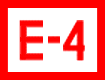 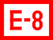 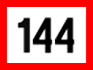 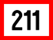 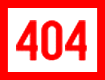 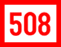 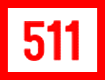 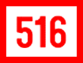 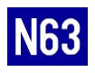 | ||||
| E 4 | linia autobusowa ekspresowa okresowa szczytowa (kursuje w dni powszednie) | NOWA LINIA.METRO
MARYMONT – Włościańska – Żelazowska – aleja Armii Krajowej (powrót:
aleja Armii Krajowej – Słowackiego – Włościańska – METRO MARYMONT.) –
most Grota-Roweckiego – Modlińska – Światowida – Świętosławskiego –
TARCHOMIN (powrót: TARCHOMIN – Świętosławskiego – Świderska –
Ćmielowska – Światowida). Przystanki: METRO MARYMONT, METRO MARYMONT (→METRO MARYMONT), EKSPRESOWA (NŻ), BIAŁOŁĘKA-RATUSZ, MYŚLIBORSKA, TARCHOMIN (→METRO MARYMONT), TARCHOMIN. | Realna trasa. | |
| E 8 | linia autobusowa ekspresowa okresowa szczytowa (kursuje w dni powszednie) | NOWA LINIA.METRO
MARYMONT – Włościańska – Żelazowska – aleja Armii Krajowej (powrót:
aleja Armii Krajowej – Słowackiego – Włościańska – METRO MARYMONT.) –
most Grota-Roweckiego – Modlińska – Światowida – NOWODWORY. Przystanki: METRO MARYMONT, METRO MARYMONT (→METRO MARYMONT), MEHOFFERA, STEFANIKA, NOWODWORY, NOWODWORY. | Realna trasa. | |
| 144 | linia autobusowa zwykła stała | NOWA LINIA.ŻERAŃ FSO – Modlińska – Światowida – Milenijna – Ćmielowska – Światowida – Ordonówny – Mehoffera – Modlińska – DĄBRÓWKA SZLACHECKA (powrót: DĄBRÓWKA SZLACHECKA – Modlińska – Aluzyjna – Dąbrówka Wiślana (pętla) – Aluzyjna – Modlińska). | Skrócenie do krańca ŻERAŃ
FSO [zamiast DW. WSCHODNI (KIJOWSKA)]. Kraniec ŻERAŃ FSO wybrany w
oparciu o trasę obowiązującą rok w wcześniej (do 1 października 2007
r.). | |
| 211 | linia autobusowa zwykła stała | NOWA LINIA.NOWODWORY
– Światowida (powrót: Światowida – rondo Ligi Morskiej i Rzecznej –
Światowida – NOWODWORY.) – Dzierzgońska – Odkryta – Sprawna – Aluzyjna
– DĄBRÓWKA WIŚLANA. | Wybrane krańce sprzed 1 września 2008 r. (później obowiązujące w kursach skróconych). | |
| 404 | linia autobusowa przyspieszona okresowa | NOWA LINIA.TARCHOMIN
– Świętosławskiego – Świderska – Mehoffera – Światowida (powrót:
Światowida – Świętosławskiego – TARCHOMIN.) – Myśliborska – Obrazkowa –
Modlińska – most Grota Roweckiego – aleja Armii Krajowej – PARK OLSZYNA. Przystanki: TARCHOMIN, PANCERA (→PL. NARUTOWICZA), MEHOFFERA (→PL. NARUTOWICZA), TARCHOMIN (→PL. NARUTOWICZA), MYŚLIBORSKA, PORAJÓW, KONWALIOWA, OS. POTOK, PARK KASKADA, PARK OLSZYNA. | Skrócenie do przystanku PARK OLSZYNA. | |
| 508 | linia autobusowa przyspieszona stała | NOWA LINIA.METRO MARYMONT – Włościańska – Żelazowska – aleja Armii Krajowej (powrót: aleja Armii Krajowej – Słowackiego – Włościańska – METRO MARYMONT.)
– most Grota-Roweckiego – Modlińska – Obrazkowa – Myśliborska – Porajów
– Świderska – Mehoffera – Światowida (powrót: Światowida –
Świętosławskiego – Świderska) – NOWODWORY. Przystanki: METRO MARYMONT, METRO MARYMONT (→METRO MARYMONT), PARK KASKADA, OS. POTOK, KONWALIOWA, PŁOCHOCIŃSKA, EKSPRESOWA, PORAJÓW, PICASSA, TARCHOMIN, PANCERA (→NOWODWORY), MEHOFFERA, STEFANIKA, NOWODWORY, NOWODWORY. | Realna trasa. Pominięcie okresowego przystanku EC ŻERAŃ. | |
| 511 | linia autobusowa przyspieszona stała | NOWA LINIA.METRO
MARYMONT – Włościańska – Żelazowska – aleja Armii Krajowej (powrót:
aleja Armii Krajowej – Słowackiego – Włościańska – METRO MARYMONT.) –
most Grota-Roweckiego – Modlińska – Aluzyjna – DĄBRÓWKA WIŚLANA. Przystanki: METRO MARYMONT, METRO MARYMONT (→METRO MARYMONT), PARK KASKADA, OS. POTOK, KONWALIOWA, BIAŁOŁĘKA-RATUSZ, KLASYKÓW (NŻ), HENRYKÓW (NŻ), POETÓW, DĄBRÓWKA WIŚLANA. | Realna trasa. | |
| 516 | linia autobusowa przyspieszona stała | NOWA LINIA.ŻERAŃ FSO – Modlińska – Milenijna – Ćmielowska – Światowida – Stefanika – Odkryta – Dzierzgońska – Światowida – NOWODWORY. Przystanki: ŻERAŃ FSO, ŻERAŃ FSO (→NOWODWORY), KONWALIOWA, BIAŁOŁĘKA RATUSZ, ĆMIELOWSKA, KAMIŃSKIEGO, TARCHOMIN, MEHOFFERA, STEFANIKA, CIOŁKOSZA, HANKI ORDONÓWNY, BAREI, DZIERZGOŃSKA, GRZYMALITÓW (NŻ), NOWODWORY (→NOWODWORY), NOWODWORY. | Realna trasa. | |
| N63 | linia autobusowa nocna strefowa zwykła stała | NOWA LINIA.ŻERAŃ FSO – Modlińska – Obrazkowa – Myśliborska – Światowida – Milenijna – Ćmielowska – Światowida – Ordonówny – Mehoffera – Modlińska – DĄBRÓWKA SZLACHECKA. | Skrócenie do krańca ŻERAŃ FSO [zamiast DW. CENTRALNY]. Wykorzystanie krańca kursu skróconego do przystanku DĄBRÓWKA SZLACHECKA. | |
| Update 1.0 BRÓDNO 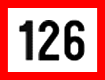 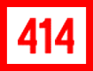 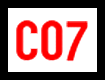 BIAŁOŁĘKA Mehoffera (Światowida -> Ordonówny), Pomorska, Majolikowa, Milenijna, Ćmielowska BRÓDNO Toruńska (Modlińska -> Wysockiego), Wysockiego (Toruńska -> Bartnicza), Bartnicza, Wyszogrodzka, Chodecka (Wyszogrodzka -> Łojewska), Kondratowicza (Chodecka -> Łabiszyńska), Łabiszyńska (Kondratowicza, Łojewska), Łojewska Nowe linie: Wydłużenie trasy: | ||||
| 126 | linia autobusowa zwykła stała | NOWA LINIA.SUWALSKA – Łabiszyńska – Łojewska – Chodecka (powrót: Chodecka – Kondratowicza – Łabiszyńska – SUWALSKA.)
– Wyszogrodzka – Bartnicza – Wysockiego – Toruńska – Modlińska –
Mehoffera – Światowida – Świętosławskiego – TARCHOMIN (powrót:
TARCHOMIN – Świętosławskiego – Świderska – Mehoffera). | Trasa skrócona do krańca SUWALSKA [zamiast CH MARKI] przez ulicę Toruńską. Kraniec TARCHOMIN wybrany w oparciu o prawdziwą trasę z krańcem SUWALSKA (linia 126 bywała skracana do tego krańca w okresie Wszystkich Świętych). Wykorzystana trasa w identycznej formie w rzeczywistości obowiązywała do 19 lipca 2004 r., a w prawie identycznej formie (do krańca CH MARKI) obowiązywała do 1 września 2008 r. | |
| 211 | linia autobusowa zwykła stała | WYDŁUŻENIE LINII.TARCHOMIN
– Świderska (powrót: Świderska – Ćmielowska – Światowida –
Świętosławskiego – Świderska – TARCHOMIN.) – Porajów – Myśliborska –
Światowida – Milenijna – Pomorska – Majolikowa – Mehoffera – Ordonówny
– Światowida – Dzierzgońska – Odkryta – Sprawna – Aluzyjna
– DĄBRÓWKA WIŚLANA. | Realna trasa. | |
| 414 | linia autobusowa przyspieszona okresowa | NOWA LINIA.BRÓDNO-PODGRODZIE
– Chodecka – Wyszogrodzka – Bartnicza – Wysockiego – Toruńska – most
Grota-Roweckiego – aleja Armii Krajowej – PARK OLSZYNA. Przystanki: BRÓDNO-PODGRODZIE, ŁOJEWSKA, SZPITAL BRÓDNOWSKI, CHODECKA, REMBIELIŃSKA, BARTNICZA, BAZYLIAŃSKA, ŻERAŃ FSO, OS. POTOK, PARK KASKADA, PARK OLSZYNA. | Skrócenie do przystanku PARK OLSZYNA. | |
| C07 | linia autobusowa cmentarna zwykła | NOWA LINIA.ŻERAŃ FSO – Modlińska – Mehoffera – Światowida – NOWODWORY. | Realna trasa. | |